Туреччина та її краєвиди
Найбільш вражаючі місця
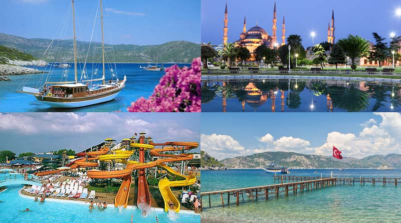
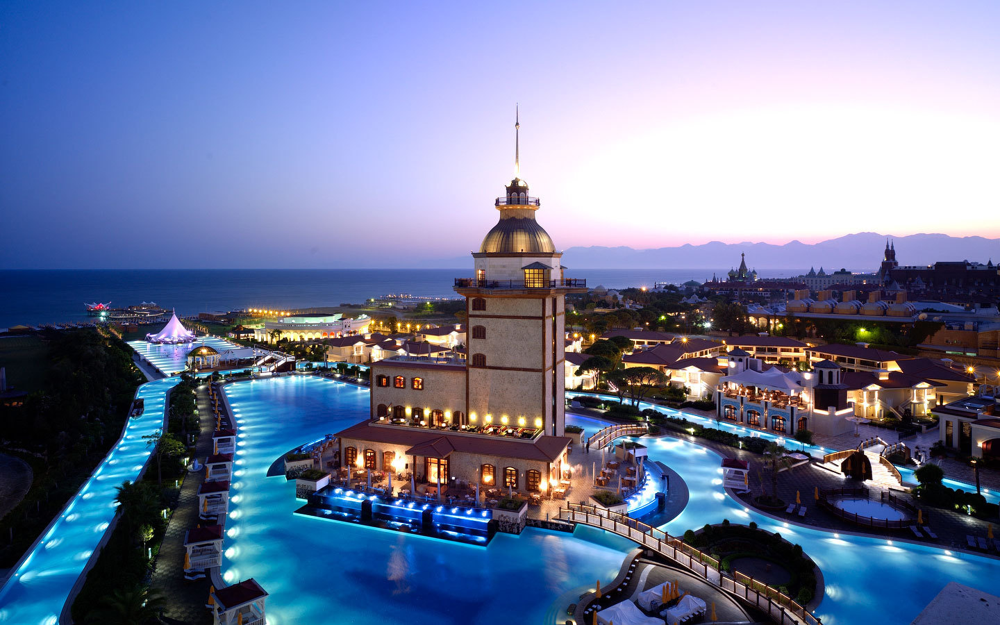
Туреччина - країна з великими рекреаційними ресурсами, що приваблює туристів з усього світу з пізнавальними, лікувальними та оздоровчими цілями, екскурсійними та іншими цілями. Найбільші міста: Стамбул, Анкара, Ізмір, Бурса, Адана, Анталія, Конья. Це унікальна країна, що поєднує в собі багату історію, культурну спадщину та захоплюючу природну красу. Будь то піщані пляжі Середземного моря, величні гори Тавра або вражаючі стародавні пам’ятки, Туреччина пропонує неперевершені можливості для туристичних пригод.
Одним із найпопулярніших напрямів туризму в Туреччині є узбережжя, які простягаються вздовж Середземного та Егейського морів. Білі пляжі, ясна вода та теплий клімат роблять ці місця ідеальними для відпочинку на узбережжі. Міста, такі як Анталья, Бодрум і Кушадаси, пропонують широкий вибір готелів, ресторанів та розважальних закладів, щоб задовольнити всі ваші потреби у відпочинку та розвагах.
Туреччина – як мішок сюрпризів для туристів
І тільки від вас залежить, що саме ви звідти отримаєте
Все включено, аніматори, гучні вечірки біля басейну та шведський стіл. Або запальна подорож до дивовижних місць, де кожен камінчик може розповісти цікаву історію.
Подорож до Туреччини – це унікальний досвід, який пропонує незабутні пригоди та враження. Будь ви любителем пляжного відпочинку, історії та культури, природної краси або гастрономії, Туреччина задовольнить усі ваші туристичні бажання. Відкрийте для себе пишноту та різноманітність цієї дивовижної країни та створіть незабутні спогади на все життя.
Хочу розповісти про найбільш вражаючі місця, а саме Сіде, Каппадокія, півострів Дача, озеро Ван і печера Дамлаташ.
Це старовинне приморське місто, розташоване на півострові неподалік від Анталії. Цей дорогий і престижний курорт пропонує своїм гостям тишу і спокій, можливість пограти на прекрасному пляжі і насолодитися морем, інші розваги, а також здійснити екскурсійну подорож по слідах Антонія і Клеопатри. Сіде має два великих пляжу, розташованих зі Східної та західної сторони півострова, а також невелику затишну піщану бухту в самому античному місті. На заході розташовано безліч готелів, тоді як східний пляж містить стародавні руїни та тут менше людей.
Це не адміністративна, а історична область Туреччини. Вона досить велика і насичена пам'ятками, тому варто витратити на неї не менше двох днів. Відвідайте хетську фортецю в містечку Учізар біля Гереме, з вершини якої відкривається найкращий вид на Каппадокію.
Каппадокія – самобутній регіон Туреччини з печерними готелями, підземними містами, польотами на повітряних кулях, своєрідною їжею, хетським мистецтвом, лижними походами по згаслому вулкану і приголомшливими пейзажами.
Печера в центрі міста Аланія, біля західного підніжжя півострова. Назва Дамлаташ можна перекласти з турецького як «камінь у краплях» (тур. Damla - крапля, taş - камінь). Пропозиція відвідати печеру Дамлаташ у Туреччині – трохи оксюморон. Тут завжди опиняєшся в печерах: храмах, монастирях, фортецях і навіть скельних готелях. Але ця печера інша. Її відкриття в 1948 році було повною випадковістю: робітники добували каміння і знайшли вхід в невідому печеру.
На вході в печеру вузький прохід завдовжки 50 м, що виводить у циліндричну порожнину. Усередині печери можна побачити фантастичні утворення різнокольорових сталактитів та сталагмітів, вік яких налічує 15 тисяч років. Температура у печері постійно тримається на позначці +22…+23 градуси, вологість становить понад 90%.
Дамлаташ є однією з небагатьох турецьких печер, спеціально обладнаних для відвідування туристами. Відвідування печери корисне для хворих на астму. Цілющим факторами можуть бути стабільна температура, дуже велика вологість, підвищений вміст вуглекислого газу, невелика радіоактивність та іонізація повітря.
На півострові Датча дуже вітряно і приголомшливо красиво. На півдні - чисті пляжі, на заході - руїни стародавнього міста Кніду, в центрі - колоритне портове містечко. Скрізь оливкові та мигдальні дерева. У містечко Датча варто побувати хоча б заради можливості скуштувати справжні рибні страви, приготовані за рецептами, яким сотні років.
Цікаві факти про півострів Датча
- Місце, де зустрічаються Егейське і Середземне моря
- Місто творчих людей
- Мигдальний рай
- Місто Афродіти та стародавніх вчених
Озеро Ван є ще одним віддаленим, але цінним турецьким місцем. Турки вірять, що в озері живе первозданне чудовисько, іноді навіть знімають його на фото/відео. І делегації справжніх вчених абсолютно серйозно шукають докази її існування.
Походження озера Ван починається з виверження лави. Навколо водойми знаходяться кілька (зараз згаслих) вулканів. У плейстоцінову епоху вони були ще активними. Лава вулкана Немрут, яка стікає з гори, заблокувала водний стік у Ванській котловині. В результаті утворилося нове озеро, яке отримало свою назву по місцевості, в якому знаходиться.
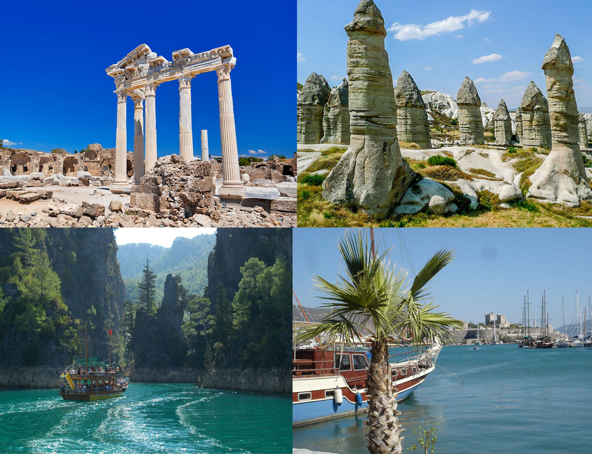
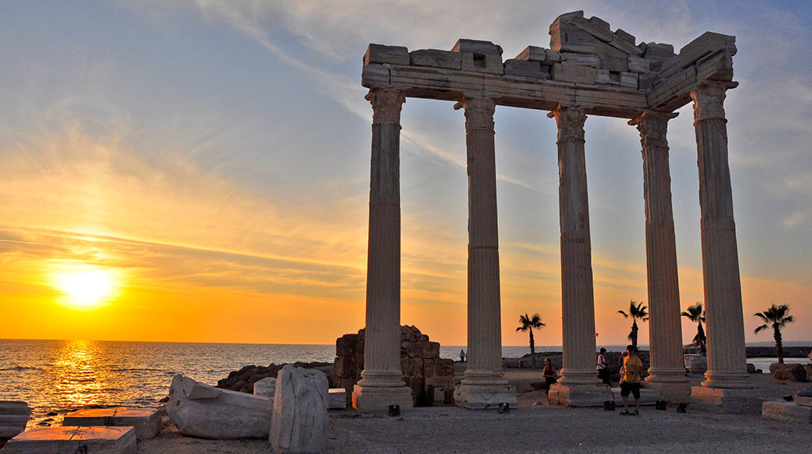
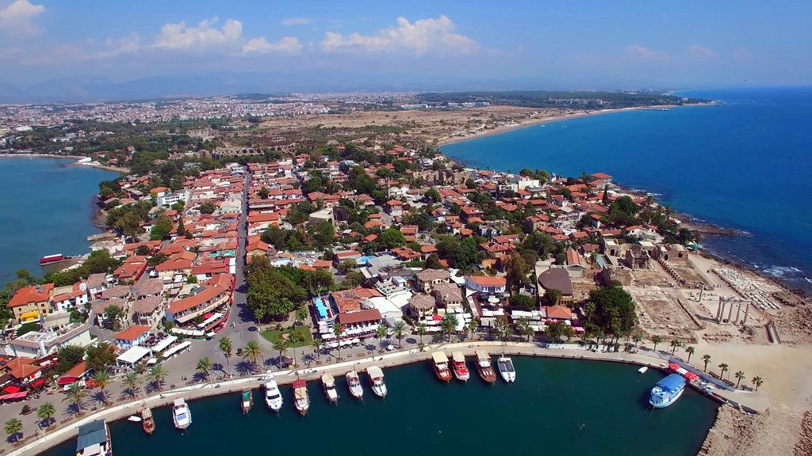
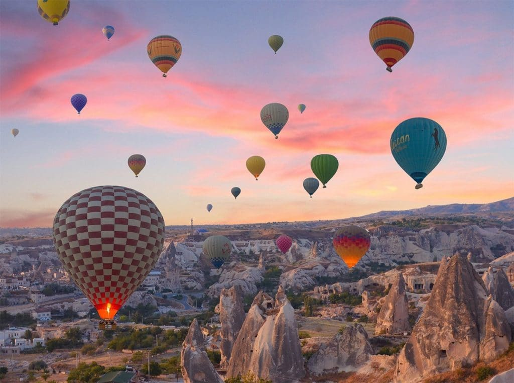
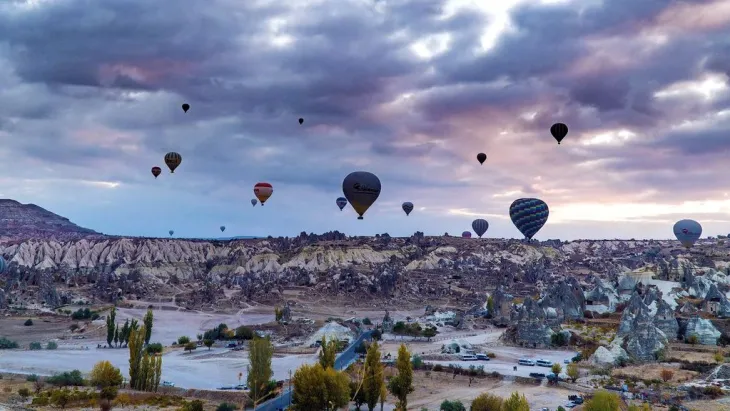
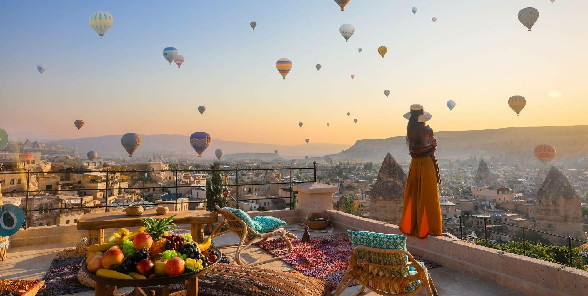

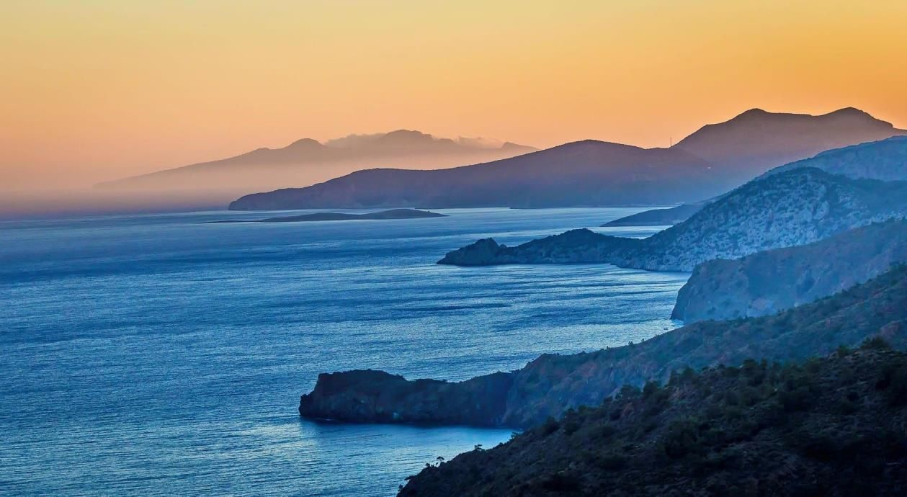
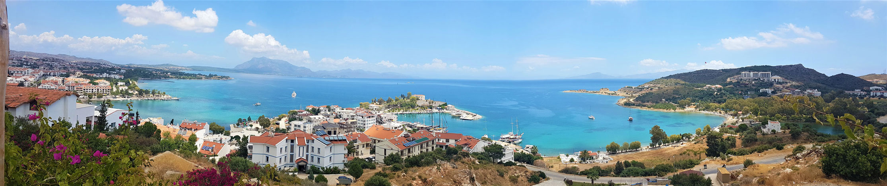

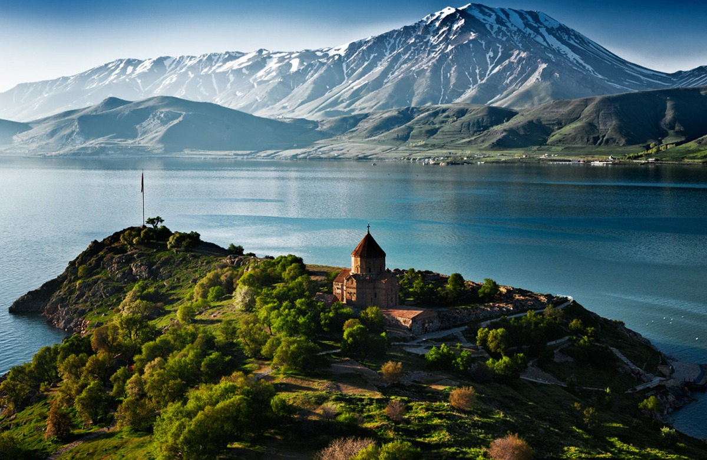

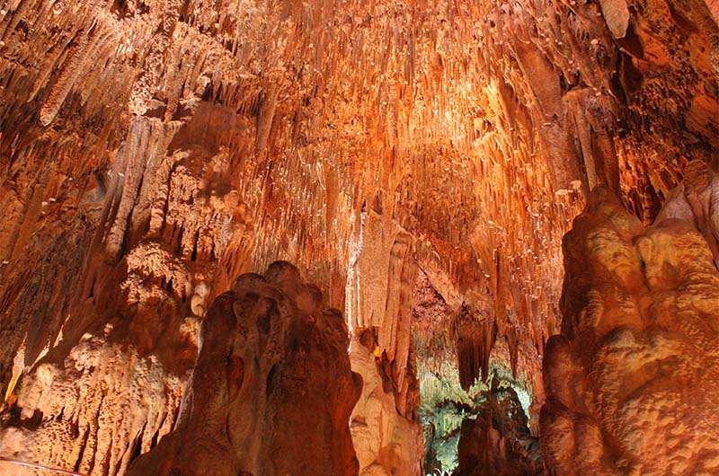
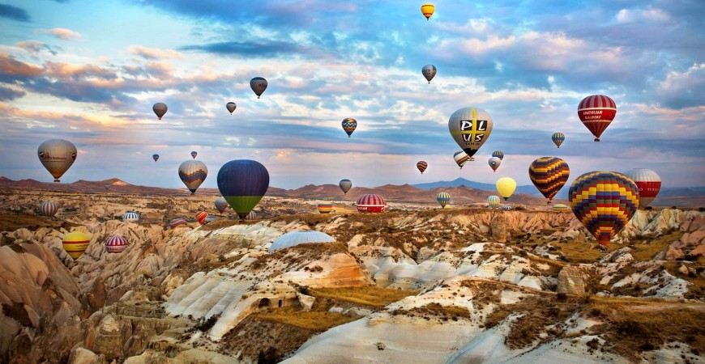
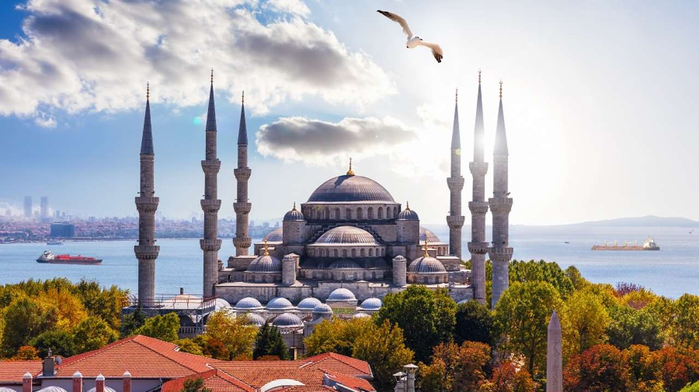
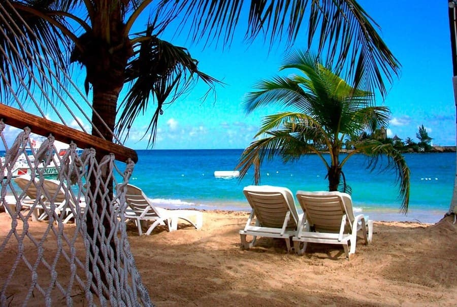
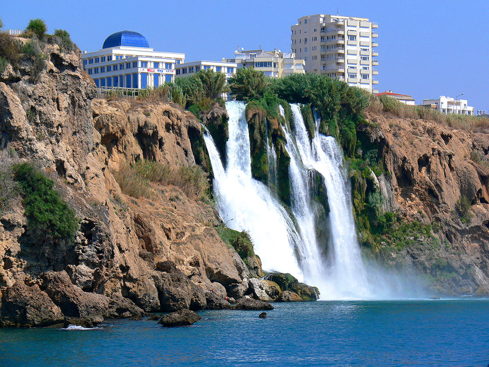
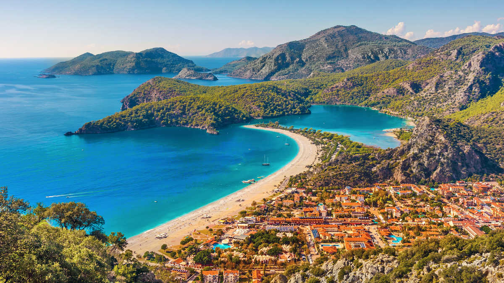
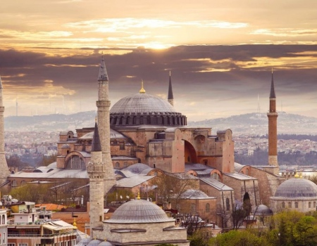
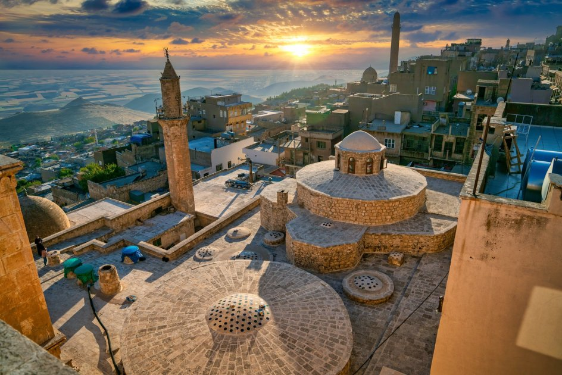
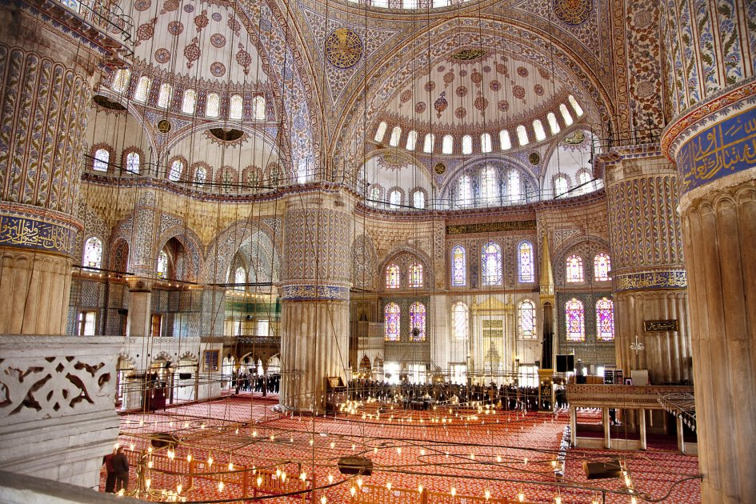
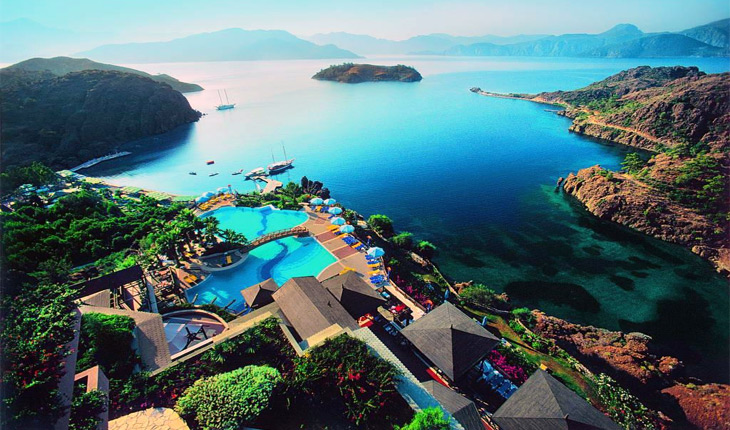